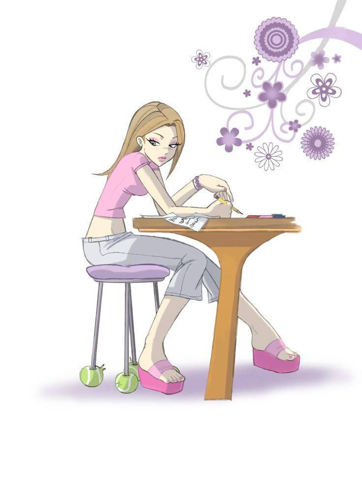
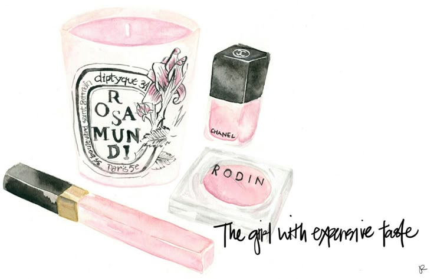
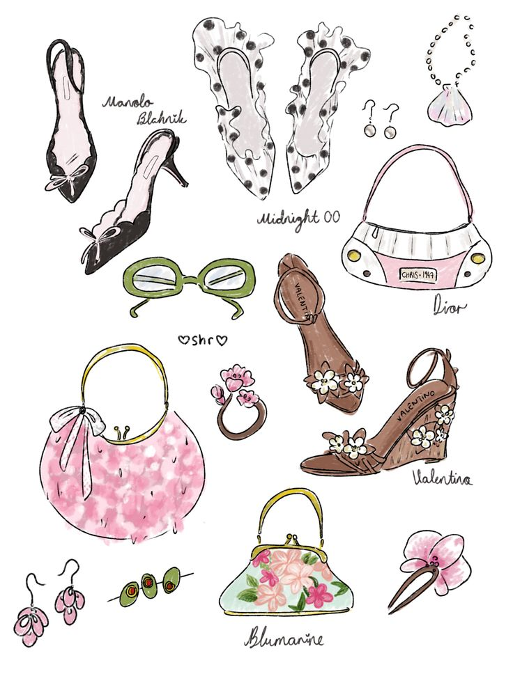

Ever since I can remember, I’ve loved fashion. Not just the clothes — but the feeling it gives. The way one outfit can change your mood, your energy, your confidence. But sometimes, people think fashion has “rules.” That you have to look a certain way. That you have to follow trends.
I never liked that.I created this website because I believe fashion is freedom.
You don’t need to fit in. You don’t need to explain yourself.
You don’t need permission.
Your style is your voice — and it should speak only for you.
What you wear is your choice. Nobody gets to judge that.


Inspo Over Rules
I’m not here to tell you what to wear.
I’m here to inspire you to create your own style.
From soft girl vibes to Y2K sparkle, this site is filled with cute inspo that helps you find what feels right for you.
Because real style doesn’t follow trends — it starts from you.

For the Dreamers
This website is pink — not because it’s “girly,” but because it’s powerful, sweet, bold, and soft all at once.
Pink means freedom to feel.
It’s a color that breaks stereotypes and shows that fashion can be strong and cute at the same time.This isn’t just a fashion site — it’s for the dreamers who want to wear their mood, their hopes, and their creativity.
If you’ve ever felt like your style didn’t fit into the box, welcome.
You’re exactly where you’re meant to be.Some days you feel soft and dreamy.
Other days, bold and unstoppable.
Clothes should match you, not the other way around.
That’s why I created this space — so you can dress for every version of yourself.
You’re not one mood, one color, or one label.
You’re a whole rainbow. And every shade of you is beautiful. 💖✨